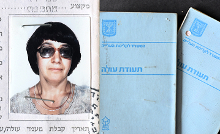
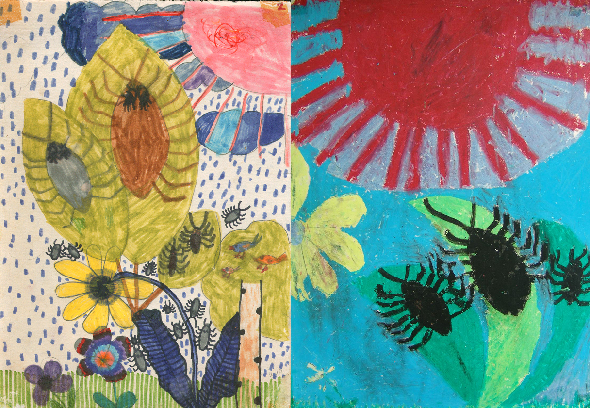
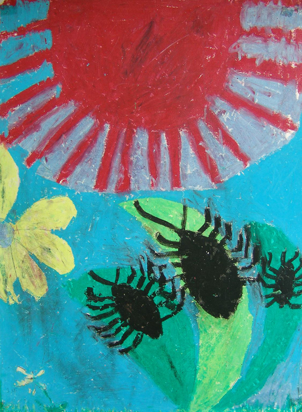
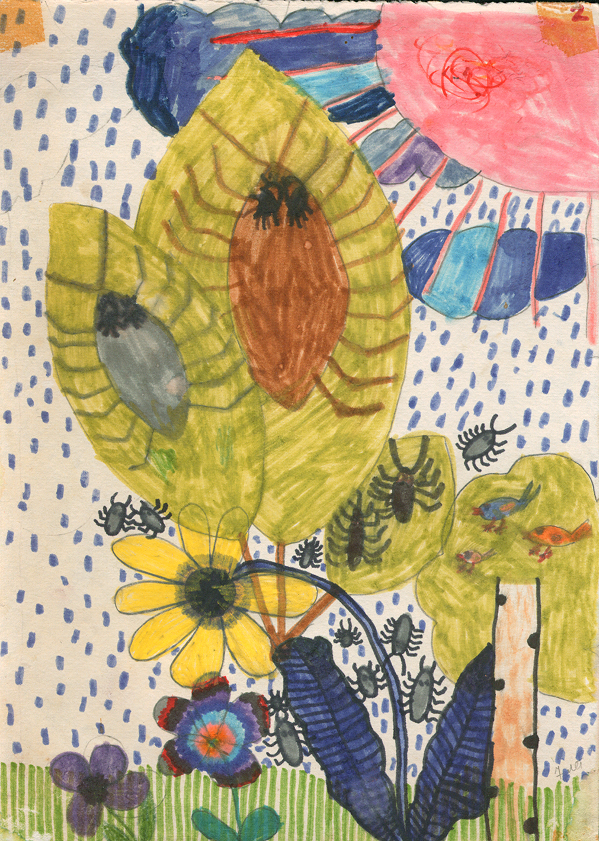
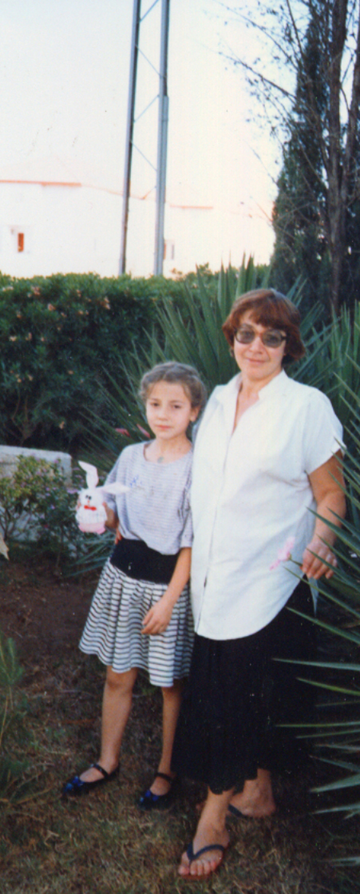

Прилетели мы в Израиль
Прилетели мы в Израиль поздним вечером 17 июня 1990 года. Летели венгерской авиакомпанией Малев с пересадкой в Будапеште. В аэропорту нас, летевших в Тель-Авив, отделили от остальных пассажиров, выставили вооруженную охрану - боялись террористов.
"Страна, где я разучилась бояться"
Израиль встречал нас улыбками, детишек одарили сладостями. Пока оформлялись первые документы, нам предложили сделать бесплатный звонок своим близким в Россию. Мы с мамой позвонили Игорю. Затем наши вещи погрузили в такси, спросили нас куда вести и мы поехали в Реховот, где, всегда готовые придти на помощь, Магазанники сняли нам квартиру.
Водитель, как сейчас я понимаю, не был знаком с городом и ,по всей видимости, запомнить адрес тоже не мог. Он останавливался у каждого фонаря ( было уже темно) , подносил записку с адресом к свету, сверял её с номером ближайшего дома и названием улицы и ехал до следующего фонаря.
Нас встречала Наташа Магазанник, она помогла нам с вещами. Было уже 2 часа ночи Наташа пожелала нам спокойной ночи и пошла к себе, жила она неподалёку в 15-20 минутах ходьбы. Кстати, заметьте - 2 часа ночи, а женщина одна, абсолютно безбоязненно идёт по улице.
Я до сих пор не могу к этому привыкнуть и мне доставляет особенное удовольствие выйти ночью одной на улицу. Мне как то в голову недавно пришло, что я забыла бояться входить в свой подъезд в позднее время и не оглядываться на шаги у меня за спиной. В Москве после 10 вечера меня всегда кто-нибудь встречал у остановки автобуса.
Вот она страна, которая непостижимым образом снилась мне.
Мама с Машей легли спать, а я, перед тем как лечь, решила обойти дом и проверить, всё ли в порядке. И вот тут произошло нечто такое, о чём не могу не рассказать.
Ещё в Москве мне одно время снились сны: будто вхожу я в лабораторию, вижу у плинтуса таракана, сыплю на него порошок - и вдруг у таракана со щелчком раскрываются крылья, и он летит. Эти сны повторялись, настойчиво. Я даже начала спрашивать у знакомых - бывают ли летающие тараканы? Никто ничего не знал. Все только смеялись.
И вот, в Израиле, в первую же ночь я вижу на верхнем кухонном шкафчике таракана. Влезаю на табуретку, собираюсь аккуратно снять его салфеткой - и вдруг, как в моих снах: щёлк - крылья раскрылись, и таракан полетел. Я чуть не свалилась с табуретки.Вот она - страна, которая непостижимым образом снилась мне.
  Серия машиных рисунков под впечатлением от израильских тараканов. Реховот 1991 год
“Тагиди бевакаша эйфо купат холим”
На следующий день пришла Наташа Магазанник, рассказала, что надо нам сделать в первую очередь. Почти везде она меня сопровождала и казалось мне, что она уже давно в стране и все ей тут понятно и все она тут знает. А приехала она всего за три месяца до меня, знала на иврите, по-моему, лишь одно слово “беседер”. Но знала его твёрдо и этим одним словом открывала все двери. Н.А. Магазанник сводил меня в банк, помог открыть счёт.
А в купат холим я пошла сама. Русскоязычные соседи объяснили мне дорогу. Я всю дорогу повторяла фразу, которой они меня научили, если придётся спросить дорогу: “Тагиди бевакаша эйфо купат холим”. В купат холим сразу поняли, что я ола хадаша и сделали все, что нужно.
В этих первых шагах в Израиле я удивлялась, как много совсем незнакомых, разных людей были готовы придти на помощь. Было даже модно иметь опекаемую семью олим. Я как то спросила, чем я могу отплатить за помощь. И мне ответили: “Ты поможешь следующим олим хадашим”. Помню и стараюсь, по мере сил.
Вспоминаю, как я поехала в Тель-Авив за документами. Советское государство не позволяло нам взять с собой наши документы, но мы могли их принести в Голландское посольство и дипломатической почтой их отправляли в Израиль.
Наши первые фото в нашем первом городе. Реховот 1991год
Первый раз в Тель-Авиве
И вот, я первый раз в Тель-Авиве. По карте ищу здание МВД. Хочу сама найти. Мне интересно самой найти. Но как только разворачиваю карту, сразу же кто-то оказывается рядом: “Вам помочь?”
В этом самом МВД пережила я трагикомическое приключение. Вхожу в лифт, нажимаю на кнопку, лифт доезжает до нужного этажа, останавливается, а двери, о ужас, двери не открываются. Боже, сегодня пятница! Значит сидеть мне здесь и сегодня и завтра. Автобусы пойдут только в воскресенье. А мама и Маша одни в Реховоте, что с ними будет?! Полное отчаяние. И тут, хотя понимаю, что глупость, но все же толкаю дверь. И ... она открывается. Нелепое мое поведение в Тель-Авивском лифте объясняется тем, что я привыкла к университетским лифтам, двери которых открывались автоматически.
"В окружении близких, хоть и незнакомых"
Дочь маминой подруги Женя Финикова написала о нас нескольким своим знакомым живущим в Израиле. Лина была та, что мгновенно пришла к нам. Она не только стала помогать нам во всем, чем только могла, но и стала нам очень близким, дорогим человеком. Она же привела к нам Маю - и это было сплошное счастье.
Благодаря им, мы оказались в среде “русских” олим 70-х годов, очень близких нам по духу. Мне даже порой казалось, что я никуда не уезжала, так привычна была для нас с мамой эта среда. В некоторых я даже видела сходство с людьми из той моей жизни.
Пришёл Яник, сын Маи, и сказал: "Давайте я вас сфотографирую". Маша чинно села на скамеечку посередине. И тут прибежала одна девочка и крикнула - Я тоже хочу! - и села рядом с Машей.А за ней - другая, потом ещё одна, и ещё… Все по очереди плюхались на скамеечку. Маша вежливо уступала им место, сдвигалась, пока в конце концов не оказалась на самом её краешке.

Наши первые фото в нашем первом городе. Реховот 1991 год